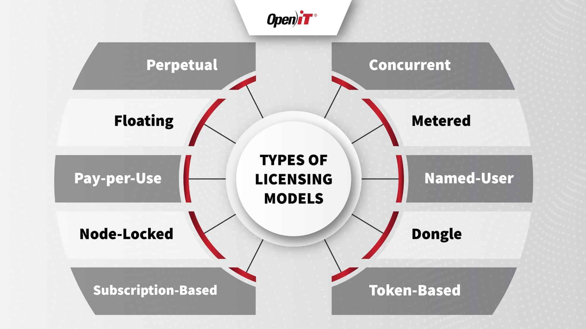

Arquitetura de Hw e Sw
Site criado para documentar os conhecimentos desenvolvidos durante a impressionante aventura em arquitetura de Hardware e Software.
Hardware
Nesta parte você vai encontrar informações sobre hardware
Software
Nesta parte você vai encontrar muitas informações deliciosas sobre software
Sistema operacional

Fundamentalmente, um sistema operacional é um software, que pode ser o Linux, Windows, Android, macOS, UNIX, entre outros.
No entanto, ele não resume aquilo que seus olhos conseguem ver ou ao que você consegue interagir. Em outras palavras, é um programa que conversa diretamente com o hardware da sua máquina.
O sistema operacional assegura que os programas funcionem corretamente. Mas antes de entendermos o que é um sistema operacional, precisamos definir o que é um sistema computacional.
Saiba Mais
Para que serve o sistema opracional?
Windows:
A função do sistema operacional é gerenciar os recursos do computador, como memória, processamento e dispositivos de entrada e saída. Ele facilita a execução de programas, oferece uma interface para o usuário e coordena as tarefas para garantir eficiência e estabilidade do sistema.
Saiba Mais sobre suas utilidades
Curiosidades sobre sistemas operacionais:
1. O Windows NT foi considerado o primeiro sistema operacional
2.Música de inicialização do sistema custou US$ 35 mil
3.Jogos clássicos ainda são bastante procurados
Saiba Mais Sobre o Operacional Windows.
Linux:
1.Tem código aberto;
Saiba Mais Sobre Linux
Driver
Link da imagem
O que é o Driver?
Driver de dispositivo (por vezes simplesmente chamado de driver ) é um programa de software que diz ao sistema operacional do seu computador como se comunicar com um dispositivo específico de hardware. Exemplos de hardware que exigem drivers incluem placas gráficas, Wi-Fi e adaptadores de rede.
Link da informação
Para que serve?
Basicamente faz com que um mouse, uma impressora e outros componentes possam ser interpretados pelo sistema e realizem suas ações da forma correta.
Fonte
CURIOSIDADES:
Drivers Específicos: Cada dispositivo de hardware geralmente requer um driver específico. Por exemplo, uma impressora da marca X pode não funcionar com o driver da marca Y.
Drivers Universais: Alguns fabricantes oferecem drivers universais que podem funcionar com múltiplos modelos de dispositivos, facilitando a instalação.
Importância na Performance: A versão do driver pode influenciar diretamente a performance do hardware. Drivers mais atualizados costumam corrigir bugs e melhorar a eficiência.
Assinatura Digital: Muitos sistemas operacionais modernos exigem que os drivers sejam assinados digitalmente para garantir segurança e autenticidade, ajudando a evitar malware.
Assinatura Digital: Muitos sistemas operacionais modernos exigem que os drivers sejam assinados digitalmente para garantir segurança e autenticidade, ajudando a evitar malware.
Drivers como APIs: Alguns drivers funcionam como APIs (interfaces de programação de aplicativos), permitindo que aplicativos de software interajam de forma padronizada com o hardware.
1. Papel Crucial no Funcionamento do Hardware: Drivers são programas essenciais que permitem ao sistema operacional se comunicar e utilizar o hardware do computador. Sem eles, muitos dispositivos, como impressoras, placas de vídeo e placas de som, não funcionariam corretamente.
2.Versões de Drivers e Compatibilidade: Cada hardware geralmente requer um driver específico para o sistema operacional em uso. Às vezes, uma atualização no sistema operacional pode quebrar a compatibilidade com drivers antigos, exigindo que novos drivers sejam instalados.
3.Driver vs. Firmware: Embora frequentemente confundidos, drivers e firmware são diferentes. Drivers são software que permite ao sistema operacional se comunicar com o hardware, enquanto firmware é o software incorporado no próprio hardware e controlado diretamente pelo fabricante.
Fonte
programas
Aplicativo
Aplicativos prontos
Aplicativos customizados
Programa

O que é?
Para que serve?
O que é um programa? Programa é uma lista de instruções que descrevem uma tarefa a ser realizada pelo computador. Uma linguagem de programação é um método padronizado para expressar instruções para um computador.
Fonte
CURIOSIDADES:
Aplicativo
O que é?
Para que serve?
Curiosidades
O que é Software Livre?
Segundo a Free Software Foundation (Fundação para o Software Livre), é
considerado livre qualquer programa que pode ser copiado, usado, modificado
e redistribuído de acordo com as necessidades de cada usuário.
Link da fonte
Para que serve?
O software livre é um movimento que visa promover o compartilhamento de conhecimento e criar uma cultura de colaboração na comunidade de desenvolvedores. O software livre pode ser usado para qualquer propósito, desde desenvolvimento de software até pesquisa científica.
O software livre é um movimento que visa promover o compartilhamento de conhecimento e criar uma cultura de colaboração na comunidade de desenvolvedores. O software livre pode ser usado para qualquer propósito, desde desenvolvimento de software até pesquisa científica.
O que é Software Proprietário?
O software proprietário é ativamente mantido e suportado por seu proprietário ou desenvolvedor, que restringe o acesso ao código-fonte e exige que os usuários adquiram licenças para uso. Esse tipo de software normalmente inclui atualizações regulares, patches de segurança e suporte ao cliente
Fonte
Para que serve?
O software proprietário, privativo ou não livre, é um software para computadores que é licenciado com direitos exclusivos para o produtor. Conforme o local de distribuição do software, este pode ser abrangido por patentes, direitos de autor, assim como limitações para a sua exportação e uso em países terceiros.

CURIOSIDADES:
Definição e Diferença: Software proprietário é aquele cujo código-fonte não é disponível ao público. Isso o distingue do software livre, que permite modificações e redistribuição.
Licenciamento: Os usuários de software proprietário geralmente precisam aceitar um contrato de licença, que limita o que eles podem fazer com o software, como instalar em múltiplos dispositivos ou fazer cópias.
Exemplos Icônicos: Produtos como Microsoft Windows, Adobe Photoshop e Oracle Database são exemplos de software proprietário amplamente utilizados em diversas indústrias.
TIPOS DE LICENÇA DE SOFTWARE:
Licença para aquisição perpétua. Esse é um dos tipos mais tradicionais de licença de uso para softwares. ...
Licença para uso temporário. ...
Licença para software livre. ...
Licença Open Source. ...
Licença para aluguel. ...
Licença para SaaS.
Para que serve?
Uma licença de software é um contrato legal entre o criador do software e o usuário final, criado para proteger os direitos autorais e o software como propriedade intelectual.
Fonte 1
Fonte 2

CURIOSIDADES:
Tipos de Licenças: Existem muitos tipos de licenças de software, incluindo licenças permissivas (como MIT e Apache) que permitem modificações e redistribuição, e licenças copyleft (como GPL) que exigem que as modificações também sejam distribuídas sob a mesma licença.
Licenças Proprietárias: Licenças de software proprietário geralmente proíbem a modificação e a redistribuição. Exemplos incluem o EULA (End User License Agreement) da Microsoft e da Adobe.
Popularidade da GPL: A Licença Pública Geral GNU (GPL) é uma das licenças de software livre mais populares. Ela foi criada por Richard Stallman e é famosa por exigir que qualquer software derivado também seja livre.
Dual Licensing: Algumas empresas adotam um modelo de licenciamento duplo, oferecendo seu software sob uma licença livre e uma licença comercial. Isso permite que os usuários escolham entre contribuir para a comunidade ou pagar por suporte.
Licença Creative Commons: Embora mais conhecida por sua aplicação em conteúdo criativo, a licença Creative Commons também pode ser usada para software, permitindo que autores compartilhem suas criações sob termos específicos.
COPYRIGHT:
Por definição, Copyright é o direito exclusivo do autor de reproduzir sua obra (literária, artística ou científica). Na maioria dos casos, a palavra copyright é acompanhada pela frase “todos os direitos reservados”, o que aponta que aquela obra está protegida por lei.
Fonte
Para que serve?
O copyright é a maneira mais recomendada de proteger os produtos, ideias e serviços de uma empresa. Com ele, é possível evitar pirataria e processar aqueles que copiam materiais de outras pessoas para ganhar dinheiro. Assim, oferece segurança aos produtores de conteúdo e ajuda a profissionalizar o mercado.
CURIOSIDADES:
COPYLEFT:
Para que serve?
CURIOSIDADES:
CREATIVA COMMONS:
Para que serve?

CURIOSIDADES: